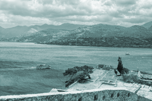

Sheryl Lun
Front End Web Developer
Welcome
I'm ready to turn your idea into an exciting website and interactive experience for your users.
- My skills include:
- HTML
- CSS3
- Javascript
- JQuery
Take a look around and enjoy!
I'm ready to turn your idea into an exciting website and interactive experience for your users.
Take a look around and enjoy!